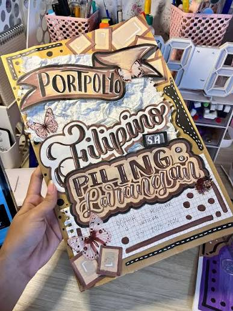
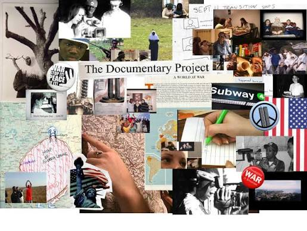
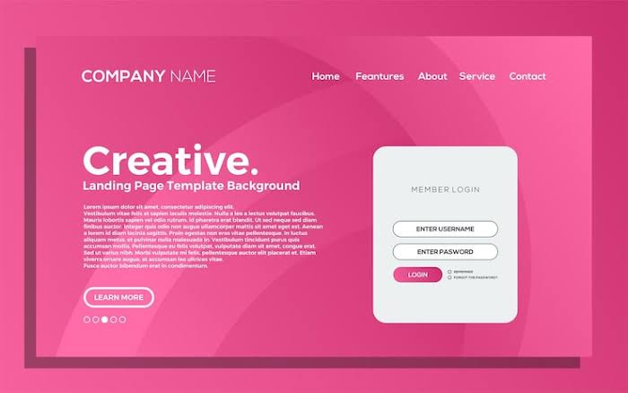

Portpolyo: Filipino sa Piling Larangan
Role: Author / Graphic & Layout Designe
A curated academic portfolio compiling formal essays, position papers, concept papers, and creative outputs in Filipino sa Piling Larangan. Designed with custom hand-crafted typography and visual elements to organize and present written works clearly.
Tools Used: Traditional Illustration, Typography, Layout Design (or replace "Tech Stack:" with "Skills / Tools:")

The Documentary Project: A Visual History Collage
Role: Researcher / Visual Collage Artist & Editor
A multimedia visual collage exploring historical events, themes of war and peace, cultural milestones, and everyday human perspectives. Combines archival photography, symbolic typography, and layered compositions to tell a cohesive visual narrative.
Tools Used: Photo Manipulation, Visual Storytelling, Layout & Collage Design (replace "Tech Stack:" with "Tools Used:")

Creative Landing Page & Member Login Interface
Role: Front-End Web Developer / UI Designer
Designed and built a responsive landing page featuring a modern gradient hero section, top navigation bar, and an integrated member login card. Focused on clean visual hierarchy, user-friendly form inputs, and engaging call-to-action components.
Tools Used: HTML, CSS, JavaScript (replace "Tools Used:" with "Tech Stack:")